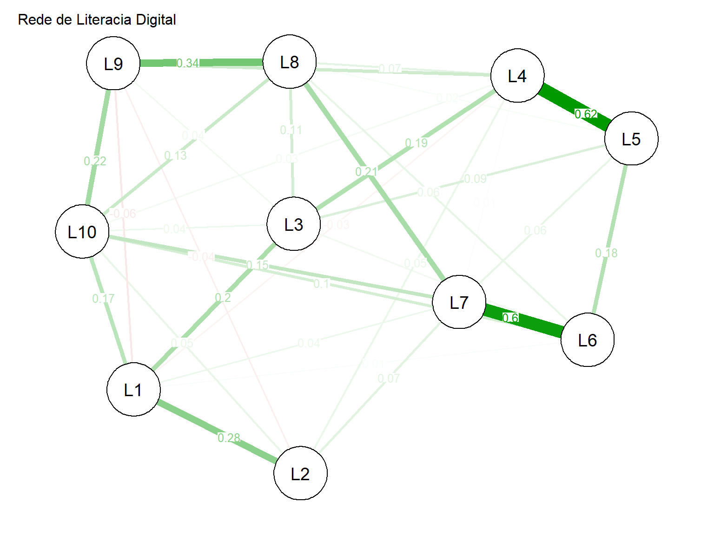
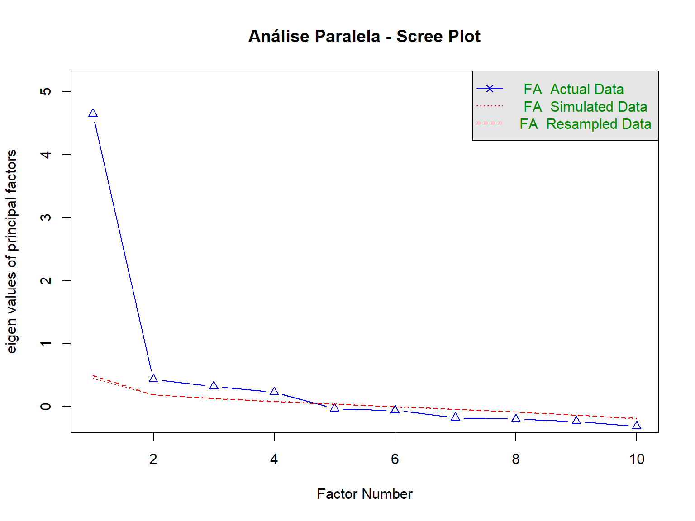
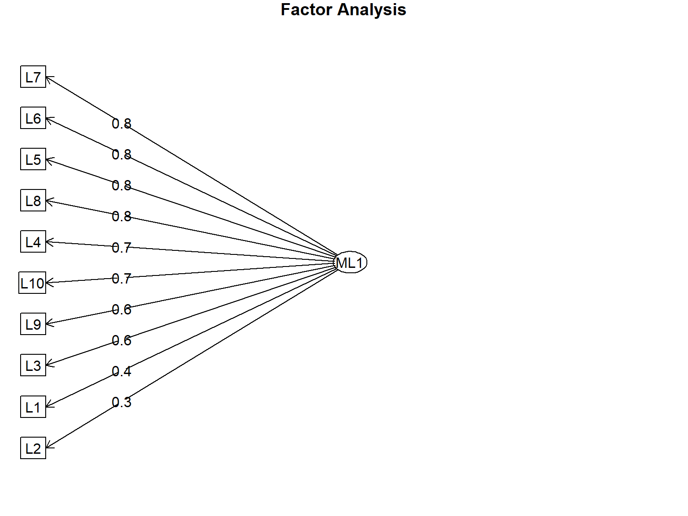

library(tidyverse) # Manipulação de dados
library(psych) # Análise psicométrica (Alpha, Omega, EFA)
library(corrplot) # Visualização de correlações
library(lavaan) # Análise Fatorial Confirmatória (CFA)
library(lavaanPlot) # Visualização de modelos SEM
library(qgraph) # Análise de redes
library(GGally) # Gráficos de correlação
# Remover notação científica
options(scipen = 999)6 Análise Psicométrica
6.1 Introdução à Psicometria
A psicometria é uma especialidade dentro das ciências comportamentais e sociais dedicada à mensuração de fenômenos psicológicos e sociais. Em pesquisas de saúde, a psicometria é fundamental para validar instrumentos que avaliam construtos como qualidade de vida, satisfação do paciente, literacia em saúde, sintomas psicológicos, entre outros.
6.1.1 Por que fazer um estudo antes de fazer um estudo?
Esta é a pergunta central da análise psicométrica. Antes de utilizar um questionário ou escala em uma pesquisa substantiva, é essencial validar o instrumento para garantir que ele mede o que realmente pretende medir.
6.1.2 O Custo de Medidas Inadequadas
Usar instrumentos que não avaliam corretamente o que propõem leva a decisões erradas baseadas em dados não confiáveis. Enquanto uma medida imperfeita pode ser melhor que nenhuma medida, pesquisadores devem reconhecer quando os procedimentos são falhos e moderar suas conclusões adequadamente.
Princípio fundamental: Medidas adequadas são uma condição necessária para pesquisa válida.
6.1.3 Aplicações em Saúde
- Validação transcultural de instrumentos (adaptação entre idiomas e culturas)
- Desenvolvimento de escalas (criação de novos instrumentos)
- Avaliação de propriedades psicométricas de questionários existentes
- Garantia de qualidade dos instrumentos antes da pesquisa principal
Exemplo: Adaptação do Questionário SF-8 para Swahili (Tanzânia) para populações com lesão cerebral traumática.
6.2 Preparação dos Dados Psicométricos
Neste capítulo, utilizaremos o dataset literacia_data.csv, que contém respostas de uma pesquisa sobre literacia digital, incluindo dados demográficos e 10 itens de escala (L1 a L10).
6.2.1 Carregando Pacotes
6.2.2 Importando e Explorando os Dados
# Importar dados de literacia digital
dados <- read_csv("data/literacia_data.csv")
# Visualizar primeiras linhas
head(dados)# Estrutura do dataframe
str(dados)spc_tbl_ [431 × 26] (S3: spec_tbl_df/tbl_df/tbl/data.frame)
$ sexo : num [1:431] 1 1 1 1 1 2 2 1 2 1 ...
$ etnia : num [1:431] 1 1 1 1 1 3 1 1 1 1 ...
$ idade : num [1:431] 30 39 57 67 28 30 37 32 45 26 ...
$ estcivil : num [1:431] 2 2 2 2 2 1 2 1 2 2 ...
$ cidade : chr [1:431] "Faxinal Pr" "Faxinal" "Londrina" "Londrina" ...
$ escolaridade: num [1:431] 5 5 3 3 2 4 4 5 4 2 ...
$ economia : num [1:431] 3 3 3 3 3 2 4 2 1 2 ...
$ profissao : chr [1:431] "Enfermeira" "Enfermeira" "Vendedora" "Professora Municipal" ...
$ renda : num [1:431] 4 4 3 3 2 3 3 2 2 3 ...
$ beneficio : num [1:431] 9 9 9 9 1 9 9 9 9 9 ...
$ comunicacao : chr [1:431] "Internet" "Internet" "Internet" "Internet" ...
$ celular : num [1:431] 1 1 1 1 1 1 1 1 2 1 ...
$ internet : num [1:431] 1 1 1 1 1 1 1 1 1 1 ...
$ acesso : chr [1:431] "Computador, Celular" "Celular" "Celular" "Tablet, Celular" ...
$ L1 : num [1:431] 4 5 3 4 5 5 5 4 3 4 ...
$ L2 : num [1:431] 4 5 4 5 5 4 4 4 4 5 ...
$ L3 : num [1:431] 4 4 4 4 4 3 4 3 4 5 ...
$ L4 : num [1:431] 4 4 4 4 4 3 4 2 3 5 ...
$ L5 : num [1:431] 4 4 4 4 4 3 4 3 4 5 ...
$ L6 : num [1:431] 5 5 4 4 4 4 4 3 1 5 ...
$ L7 : num [1:431] 4 4 4 4 4 4 5 3 1 5 ...
$ L8 : num [1:431] 4 4 4 4 4 3 4 2 1 5 ...
$ L9 : num [1:431] 4 4 4 4 4 4 4 2 1 5 ...
$ L10 : num [1:431] 4 4 4 4 4 2 4 3 1 5 ...
$ literacia : num [1:431] 4.1 4.3 3.9 4.1 4.2 3.5 4.2 2.9 2.3 4.9 ...
$ scores : num [1:431] 0.586 0.586 0.335 0.335 0.335 ...
- attr(*, "spec")=
.. cols(
.. sexo = col_double(),
.. etnia = col_double(),
.. idade = col_double(),
.. estcivil = col_double(),
.. cidade = col_character(),
.. escolaridade = col_double(),
.. economia = col_double(),
.. profissao = col_character(),
.. renda = col_double(),
.. beneficio = col_double(),
.. comunicacao = col_character(),
.. celular = col_double(),
.. internet = col_double(),
.. acesso = col_character(),
.. L1 = col_double(),
.. L2 = col_double(),
.. L3 = col_double(),
.. L4 = col_double(),
.. L5 = col_double(),
.. L6 = col_double(),
.. L7 = col_double(),
.. L8 = col_double(),
.. L9 = col_double(),
.. L10 = col_double(),
.. literacia = col_double(),
.. scores = col_double()
.. )
- attr(*, "problems")=<externalptr> # Resumo estatístico
summary(dados) sexo etnia idade estcivil
Min. :1.000 Min. :1.000 Min. :15.00 Min. :1.000
1st Qu.:1.000 1st Qu.:1.000 1st Qu.:27.00 1st Qu.:1.000
Median :1.000 Median :1.000 Median :36.00 Median :2.000
Mean :1.332 Mean :1.445 Mean :36.75 Mean :1.766
3rd Qu.:2.000 3rd Qu.:1.000 3rd Qu.:45.00 3rd Qu.:2.000
Max. :2.000 Max. :4.000 Max. :76.00 Max. :4.000
cidade escolaridade economia profissao
Length:431 Min. :1.00 Min. :1.000 Length:431
Class :character 1st Qu.:3.00 1st Qu.:2.000 Class :character
Mode :character Median :3.00 Median :3.000 Mode :character
Mean :3.65 Mean :2.733
3rd Qu.:5.00 3rd Qu.:4.000
Max. :5.00 Max. :4.000
renda beneficio comunicacao celular
Min. :1.000 Min. :1.000 Length:431 Min. :1.000
1st Qu.:2.000 1st Qu.:9.000 Class :character 1st Qu.:1.000
Median :3.000 Median :9.000 Mode :character Median :1.000
Mean :2.673 Mean :8.782 Mean :1.005
3rd Qu.:3.000 3rd Qu.:9.000 3rd Qu.:1.000
Max. :5.000 Max. :9.000 Max. :2.000
internet acesso L1 L2
Min. :1.000 Length:431 Min. :1.000 Min. :1.000
1st Qu.:1.000 Class :character 1st Qu.:3.000 1st Qu.:4.000
Median :1.000 Mode :character Median :4.000 Median :4.000
Mean :1.028 Mean :3.668 Mean :4.204
3rd Qu.:1.000 3rd Qu.:5.000 3rd Qu.:5.000
Max. :2.000 Max. :5.000 Max. :5.000
L3 L4 L5 L6 L7
Min. :1.000 Min. :1.000 Min. :1.000 Min. :1.00 Min. :1.000
1st Qu.:3.000 1st Qu.:3.000 1st Qu.:3.000 1st Qu.:3.00 1st Qu.:3.000
Median :4.000 Median :4.000 Median :4.000 Median :4.00 Median :4.000
Mean :3.536 Mean :3.661 Mean :3.712 Mean :3.64 Mean :3.675
3rd Qu.:4.000 3rd Qu.:4.000 3rd Qu.:4.000 3rd Qu.:4.00 3rd Qu.:4.000
Max. :5.000 Max. :5.000 Max. :5.000 Max. :5.00 Max. :5.000
L8 L9 L10 literacia
Min. :1.000 Min. :1.000 Min. :1.000 Min. :1.600
1st Qu.:3.000 1st Qu.:3.000 1st Qu.:2.000 1st Qu.:3.300
Median :4.000 Median :4.000 Median :3.000 Median :3.700
Mean :3.631 Mean :3.603 Mean :3.181 Mean :3.651
3rd Qu.:4.000 3rd Qu.:4.000 3rd Qu.:4.000 3rd Qu.:4.100
Max. :5.000 Max. :5.000 Max. :5.000 Max. :5.000
scores
Min. :-1.838299
1st Qu.:-0.454011
Median : 0.021178
Mean : 0.001026
3rd Qu.: 0.335293
Max. : 1.632261 6.2.3 Convertendo Variáveis Categóricas
# Converter variáveis qualitativas em fatores
dados <- dados %>%
mutate(across(c(sexo, etnia, estcivil, escolaridade, economia,
renda, beneficio, comunicacao, celular,
internet, acesso), as.factor))
# Verificar estrutura após conversão
str(dados)tibble [431 × 26] (S3: tbl_df/tbl/data.frame)
$ sexo : Factor w/ 2 levels "1","2": 1 1 1 1 1 2 2 1 2 1 ...
$ etnia : Factor w/ 4 levels "1","2","3","4": 1 1 1 1 1 3 1 1 1 1 ...
$ idade : num [1:431] 30 39 57 67 28 30 37 32 45 26 ...
$ estcivil : Factor w/ 4 levels "1","2","3","4": 2 2 2 2 2 1 2 1 2 2 ...
$ cidade : chr [1:431] "Faxinal Pr" "Faxinal" "Londrina" "Londrina" ...
$ escolaridade: Factor w/ 5 levels "1","2","3","4",..: 5 5 3 3 2 4 4 5 4 2 ...
$ economia : Factor w/ 4 levels "1","2","3","4": 3 3 3 3 3 2 4 2 1 2 ...
$ profissao : chr [1:431] "Enfermeira" "Enfermeira" "Vendedora" "Professora Municipal" ...
$ renda : Factor w/ 5 levels "1","2","3","4",..: 4 4 3 3 2 3 3 2 2 3 ...
$ beneficio : Factor w/ 5 levels "1","2","3","4",..: 5 5 5 5 1 5 5 5 5 5 ...
$ comunicacao : Factor w/ 12 levels "Internet","Jornal Escrito e/ou Revistas",..: 1 1 1 1 1 10 10 1 9 1 ...
$ celular : Factor w/ 2 levels "1","2": 1 1 1 1 1 1 1 1 2 1 ...
$ internet : Factor w/ 2 levels "1","2": 1 1 1 1 1 1 1 1 1 1 ...
$ acesso : Factor w/ 10 levels "Celular","Celular, Notebook",..: 4 1 1 9 1 1 4 2 3 1 ...
$ L1 : num [1:431] 4 5 3 4 5 5 5 4 3 4 ...
$ L2 : num [1:431] 4 5 4 5 5 4 4 4 4 5 ...
$ L3 : num [1:431] 4 4 4 4 4 3 4 3 4 5 ...
$ L4 : num [1:431] 4 4 4 4 4 3 4 2 3 5 ...
$ L5 : num [1:431] 4 4 4 4 4 3 4 3 4 5 ...
$ L6 : num [1:431] 5 5 4 4 4 4 4 3 1 5 ...
$ L7 : num [1:431] 4 4 4 4 4 4 5 3 1 5 ...
$ L8 : num [1:431] 4 4 4 4 4 3 4 2 1 5 ...
$ L9 : num [1:431] 4 4 4 4 4 4 4 2 1 5 ...
$ L10 : num [1:431] 4 4 4 4 4 2 4 3 1 5 ...
$ literacia : num [1:431] 4.1 4.3 3.9 4.1 4.2 3.5 4.2 2.9 2.3 4.9 ...
$ scores : num [1:431] 0.586 0.586 0.335 0.335 0.335 ...6.2.4 Tratamento de Dados Faltantes
sexo etnia idade estcivil cidade escolaridade
0 0 0 0 0 0
economia profissao renda beneficio comunicacao celular
0 0 0 0 0 0
internet acesso L1 L2 L3 L4
0 0 0 0 0 0
L5 L6 L7 L8 L9 L10
0 0 0 0 0 0
literacia scores
0 0 sexo etnia idade estcivil cidade escolaridade
0 0 0 0 0 0
economia profissao renda beneficio comunicacao celular
0 0 0 0 0 0
internet acesso L1 L2 L3 L4
0 0 0 0 0 0
L5 L6 L7 L8 L9 L10
0 0 0 0 0 0
literacia scores
0 0 # Estratégias de tratamento:
# 1. Exclusão listwise (casos completos)
dados_completo <- dados[complete.cases(dados), ]
# 2. Imputação por média (se apropriado)
# dados$idade[is.na(dados$idade)] <- mean(dados$idade, na.rm = TRUE)Importante: A escolha da estratégia de tratamento de dados faltantes depende do padrão dos missing data (MCAR, MAR, MNAR) e dos objetivos da pesquisa. Para análises psicométricas, geralmente preferimos casos completos.
6.3 Matriz de Correlação
Antes de realizar análises fatoriais, é útil examinar a estrutura de correlações entre os itens.
6.3.1 Calculando e Visualizando Correlações
# Selecionar itens da escala de literacia (L1 a L10) e idade
dados_cor <- dados %>%
select(L1:L10, idade)
# Calcular matriz de correlação
matriz_cor <- cor(dados_cor, use = "complete.obs")
# Visualização com corrplot - círculos
corrplot(matriz_cor,
method = "circle",
type = "upper",
tl.col = "black",
tl.srt = 45)
# Visualização com números
corrplot(matriz_cor,
method = "number",
type = "upper",
tl.col = "black",
tl.srt = 45)
# Visualização com cores e ordenação por clusters
corrplot(matriz_cor,
method = "color",
type = "upper",
order = "hclust",
addCoef.col = "black",
tl.col = "black",
tl.srt = 45,
number.cex = 0.7)
6.3.2 Interpretação da Matriz de Correlação
Os valores de correlação variam de -1 a +1:
- r ≈ +1: Correlação positiva forte
- r ≈ 0: Correlação fraca ou ausente
- r ≈ -1: Correlação negativa forte
Para análise fatorial, esperamos:
- Correlações moderadas a fortes entre itens do mesmo fator
- Correlações mais fracas entre itens de fatores diferentes
- Ausência de correlações muito altas (r > 0,90), que indicam redundância
6.3.3 Heatmap de Correlação
# Heatmap com cores
heatmap(matriz_cor,
col = colorRampPalette(c("blue", "white", "red"))(20),
main = "Heatmap de Correlações - Itens de Literacia")
6.4 Análise de Redes
A análise de redes oferece uma perspectiva alternativa sobre as relações entre itens, visualizando-os como nós conectados por arestas.
6.4.1 Criando a Rede
# Selecionar itens da escala
dados_rede <- dados %>%
select(L1:L10) %>%
na.omit()
# Calcular matriz de correlação
matriz_rede <- cor(dados_rede)
# Calcular tamanho da amostra
n_amostra <- nrow(dados_rede)
# Criar rede com qgraph
rede <- qgraph(matriz_rede,
graph = "glasso", # Regularização LASSO
layout = "spring", # Layout spring
vsize = 8, # Tamanho dos nós
sampleSize = n_amostra, # Tamanho da amostra
edge.labels = TRUE, # Mostrar valores nas arestas
edge.label.cex = 0.8, # Tamanho dos rótulos
title = "Rede de Literacia Digital")
6.4.2 Interpretação da Análise de Redes
- Nós: Representam as variáveis (itens)
- Arestas: Representam relações entre variáveis
- Espessura das arestas: Indica a força da relação
- Cor das arestas: Verde = positiva, Vermelho = negativa
- Posição dos nós: Algoritmo agrupa nós fortemente relacionados
Medidas de centralidade (grau, intermediação, proximidade) podem identificar os itens mais importantes na rede.
6.5 Análise de Confiabilidade
A confiabilidade refere-se ao grau de consistência e precisão de um instrumento de medida. Representa a proporção da variância atribuível ao verdadeiro escore da variável latente.
6.5.1 Alfa de Cronbach
O Alfa de Cronbach (α) é a medida mais amplamente utilizada de consistência interna.
6.5.1.1 Teoria
- Baseado nas correlações entre itens
- Usa a matriz de covariância dos itens
- Valores aceitáveis: α > 0,70
- Valores ideais: 0,70 < α < 0,95
Fórmula:
\[ \alpha = \frac{k}{k-1} \left(1 - \frac{\sum \sigma^2_i}{\sigma^2_T}\right) \]
Onde: - k = número de itens - σ²ᵢ = variância de cada item - σ²_T = variância total da escala
6.5.1.2 Calculando o Alfa de Cronbach
# Selecionar itens da escala
itens_escala <- dados %>%
select(L1:L10) %>%
na.omit()
# Calcular Alfa de Cronbach
alfa <- psych::alpha(itens_escala,
n.iter = 1000, # Iterações para bootstrap
check.keys = TRUE) # Verifica itens reversos
# Exibir resultados
print(alfa)
Reliability analysis
Call: psych::alpha(x = itens_escala, check.keys = TRUE, n.iter = 1000)
raw_alpha std.alpha G6(smc) average_r S/N ase mean sd median_r
0.88 0.89 0.9 0.44 7.8 0.0087 3.7 0.64 0.46
95% confidence boundaries
lower alpha upper
Feldt 0.86 0.88 0.9
Duhachek 0.86 0.88 0.9
bootstrapped 0.86 0.88 0.9
Reliability if an item is dropped:
raw_alpha std.alpha G6(smc) average_r S/N alpha se var.r med.r
L1 0.89 0.89 0.90 0.47 8.1 0.0079 0.027 0.48
L2 0.88 0.90 0.91 0.49 8.5 0.0085 0.021 0.48
L3 0.87 0.88 0.90 0.44 7.1 0.0096 0.032 0.46
L4 0.86 0.87 0.88 0.42 6.6 0.0099 0.026 0.43
L5 0.86 0.87 0.88 0.42 6.6 0.0100 0.025 0.43
L6 0.86 0.87 0.88 0.42 6.5 0.0103 0.026 0.44
L7 0.86 0.86 0.88 0.42 6.4 0.0104 0.026 0.44
L8 0.86 0.87 0.89 0.42 6.6 0.0101 0.028 0.43
L9 0.87 0.88 0.90 0.45 7.3 0.0094 0.028 0.46
L10 0.86 0.87 0.89 0.43 6.7 0.0102 0.031 0.44
Item statistics
n raw.r std.r r.cor r.drop mean sd
L1 431 0.57 0.53 0.45 0.41 3.7 1.22
L2 431 0.46 0.45 0.36 0.34 4.2 0.85
L3 431 0.68 0.69 0.64 0.60 3.5 0.81
L4 431 0.75 0.77 0.77 0.69 3.7 0.80
L5 431 0.76 0.78 0.77 0.69 3.7 0.80
L6 431 0.80 0.80 0.80 0.74 3.6 0.90
L7 431 0.81 0.82 0.82 0.76 3.7 0.87
L8 431 0.77 0.78 0.75 0.71 3.6 0.87
L9 431 0.66 0.66 0.61 0.56 3.6 0.94
L10 431 0.77 0.75 0.72 0.69 3.2 1.07
Non missing response frequency for each item
1 2 3 4 5 miss
L1 0.07 0.08 0.28 0.24 0.33 0
L2 0.02 0.02 0.08 0.48 0.40 0
L3 0.01 0.09 0.32 0.50 0.07 0
L4 0.00 0.10 0.22 0.58 0.10 0
L5 0.01 0.08 0.20 0.61 0.10 0
L6 0.02 0.11 0.18 0.57 0.11 0
L7 0.02 0.10 0.18 0.59 0.11 0
L8 0.02 0.09 0.23 0.55 0.10 0
L9 0.03 0.10 0.24 0.50 0.13 0
L10 0.06 0.23 0.24 0.39 0.07 06.5.1.3 Interpretação do Output
Reliability analysis
raw_alpha std.alpha G6(smc) average_r S/N
0.89 0.89 0.91 0.42 8.1
lower alpha upper 95% confidence boundaries
0.87 0.89 0.91Interpretação:
- raw_alpha = 0,89: Alfa de Cronbach bruto (excelente consistência interna)
- std.alpha = 0,89: Alfa padronizado
- average_r = 0,42: Correlação média entre itens
- IC 95% [0,87; 0,91]: Intervalo de confiança do alfa
Critérios de interpretação:
| Alfa de Cronbach | Consistência Interna |
|---|---|
| α < 0,60 | Inaceitável |
| 0,60 ≤ α < 0,70 | Questionável |
| 0,70 ≤ α < 0,80 | Aceitável |
| 0,80 ≤ α < 0,90 | Boa |
| α ≥ 0,90 | Excelente (pode indicar redundância) |
6.5.1.4 Limitação Importante
“Alpha não valida um teste”
Alta consistência interna não garante que o instrumento mede o que afirma medir. Confiabilidade é necessária, mas não suficiente para validade.
6.5.2 Ômega de McDonald
O Ômega de McDonald (ω) é uma medida alternativa de confiabilidade composta, considerada mais geral que o Alfa de Cronbach.
6.5.2.1 Teoria
- Calculado usando cargas fatoriais e unicidades da análise fatorial
- Baseado em estrutura CFA
- Mais apropriado para escalas multidimensionais
- Valores aceitáveis: ω > 0,70
Fórmula:
\[ \omega = \frac{(\sum \lambda_i)^2}{(\sum \lambda_i)^2 + \sum \theta_i} \]
Onde: - λᵢ = cargas fatoriais - θᵢ = variâncias de erro
6.5.2.2 Calculando o Ômega de McDonald
# Calcular Ômega de McDonald
omega_result <- omega(itens_escala)
# Exibir resultados
print(omega_result)Omega
Call: omegah(m = m, nfactors = nfactors, fm = fm, key = key, flip = flip,
digits = digits, title = title, sl = sl, labels = labels,
plot = plot, n.obs = n.obs, rotate = rotate, Phi = Phi, option = option,
covar = covar)
Alpha: 0.89
G.6: 0.9
Omega Hierarchical: 0.83
Omega H asymptotic: 0.9
Omega Total 0.92
Schmid Leiman Factor loadings greater than 0.2
g F1* F2* F3* h2 h2 u2 p2 com
L1 0.38 0.89 0.93 0.93 0.07 0.15 1.35
L2 0.30 0.32 0.19 0.81 0.46 2.03
L3 0.55 0.30 0.42 0.42 0.58 0.72 1.77
L4 0.65 0.69 0.90 0.90 0.10 0.47 1.99
L5 0.68 0.53 0.74 0.74 0.26 0.62 1.89
L6 0.82 0.68 0.68 0.32 1.00 1.00
L7 0.86 0.74 0.74 0.26 1.00 1.00
L8 0.79 0.62 0.62 0.38 1.00 1.01
L9 0.63 0.42 0.42 0.58 0.96 1.10
L10 0.74 0.55 0.55 0.45 0.98 1.04
With Sums of squares of:
g F1* F2* F3* h2
4.41 0.00 0.86 0.95 4.32
general/max 1.02 max/min = Inf
mean percent general = 0.74 with sd = 0.3 and cv of 0.41
Explained Common Variance of the general factor = 0.71
The degrees of freedom are 18 and the fit is 0.4
The number of observations was 431 with Chi Square = 169.31 with prob < 0.000000000000000000000000012
The root mean square of the residuals is 0.04
The df corrected root mean square of the residuals is 0.06
RMSEA index = 0.14 and the 90 % confidence intervals are 0.121 0.159
BIC = 60.12
Compare this with the adequacy of just a general factor and no group factors
The degrees of freedom for just the general factor are 35 and the fit is 1.21
The number of observations was 431 with Chi Square = 513.4 with prob < 0.000000000000000000000000000000000000000000000000000000000000000000000000000000000000023
The root mean square of the residuals is 0.1
The df corrected root mean square of the residuals is 0.11
RMSEA index = 0.178 and the 90 % confidence intervals are 0.165 0.192
BIC = 301.09
Measures of factor score adequacy
g F1* F2* F3*
Correlation of scores with factors 0.95 0 0.89 0.96
Multiple R square of scores with factors 0.91 0 0.80 0.92
Minimum correlation of factor score estimates 0.81 -1 0.59 0.84
Total, General and Subset omega for each subset
g F1* F2* F3*
Omega total for total scores and subscales 0.92 NA 0.89 0.78
Omega general for total scores and subscales 0.83 NA 0.75 0.67
Omega group for total scores and subscales 0.07 NA 0.14 0.116.5.3 Comparação: Alfa vs. Ômega
| Característica | Alfa de Cronbach | Ômega de McDonald |
|---|---|---|
| Base de cálculo | Matriz de covariância | Cargas fatoriais (CFA) |
| Estrutura fatorial | Não requer | Requer modelo CFA |
| Dimensionalidade | Assume unidimensionalidade | Adequado para multidimensional |
| Generalidade | Mais restrito | Mais geral |
Recomendação: Reporte ambos os índices quando possível, especialmente para escalas multidimensionais.
6.6 Análise Fatorial Exploratória (EFA)
A Análise Fatorial Exploratória (AFE) é usada para desenvolvimento de teoria, explorando a estrutura latente dos dados sem hipóteses prévias sobre o número de fatores.
6.6.1 Teoria da EFA
6.6.1.1 Características Principais
- Natureza exploratória: Número de fatores determinado pelos dados
- Cargas não fixadas: Padrão de cargas emerge dos dados
- Redução de dimensionalidade: Reduz muitos itens a poucos fatores latentes
- Rotação: Fatores rotacionados para interpretação mais clara
6.6.1.2 Equação Básica
\[ X = \Lambda F + \epsilon \]
Onde: - X = variáveis observadas (itens) - Λ = matriz de cargas fatoriais - F = fatores latentes - ε = erros de medida
6.6.2 Pressupostos da EFA
6.6.2.1 Teste KMO (Kaiser-Meyer-Olkin)
O KMO avalia a adequação da amostra para análise fatorial.
# Calcular KMO
kmo_resultado <- KMO(itens_escala)
# Imprimir KMO geral
cat("KMO geral:", kmo_resultado$MSA, "\n")KMO geral: 0.8706569 # Interpretar resultado
if (kmo_resultado$MSA >= 0.9) {
cat("A adequação da amostra é excelente.\n")
} else if (kmo_resultado$MSA >= 0.8) {
cat("A adequação da amostra é boa.\n")
} else if (kmo_resultado$MSA >= 0.7) {
cat("A adequação da amostra é razoável.\n")
} else if (kmo_resultado$MSA >= 0.6) {
cat("A adequação da amostra é medíocre.\n")
} else if (kmo_resultado$MSA >= 0.5) {
cat("A adequação da amostra é inadequada.\n")
} else {
cat("A adequação da amostra é inaceitável.\n")
}A adequação da amostra é boa.Critérios de interpretação:
| KMO | Adequação da Amostra |
|---|---|
| KMO ≥ 0,90 | Excelente |
| 0,80 ≤ KMO < 0,90 | Boa |
| 0,70 ≤ KMO < 0,80 | Razoável |
| 0,60 ≤ KMO < 0,70 | Medíocre |
| 0,50 ≤ KMO < 0,60 | Inadequada |
| KMO < 0,50 | Inaceitável |
6.6.2.2 Teste de Esfericidade de Bartlett
Testa se a matriz de correlação é significativamente diferente de uma matriz identidade.
- H₀: Matriz de correlação é uma matriz identidade (variáveis não correlacionadas)
- H₁: Existem correlações significativas entre variáveis
- Desejado: p < 0,05 (rejeitar H₀)
6.6.3 Determinando o Número de Fatores
6.6.3.1 Análise Paralela
A análise paralela é o método mais confiável para determinar o número de fatores.
# Realizar análise paralela
fa.parallel(itens_escala,
fa = "fa", # Análise fatorial (não PCA)
n.iter = 100, # Número de iterações
main = "Análise Paralela - Scree Plot")
Parallel analysis suggests that the number of factors = 4 and the number of components = NA Interpretação:
- Linha azul: Autovalores observados nos dados reais
- Linha vermelha: Autovalores médios de dados aleatórios (simulados)
- Linha verde: Autovalores do 95º percentil dos dados simulados
- Decisão: Reter fatores onde a linha azul está acima da linha vermelha
6.6.3.2 Regra de Kaiser (Autovalores > 1)
Método tradicional, mas menos confiável que análise paralela.
# Scree plot simples
scree(itens_escala, main = "Scree Plot")
6.6.4 Realizando a EFA
# Determinar número de fatores (baseado em análise paralela)
n_fatores <- 4 # Ajustar baseado em análise paralela
# Realizar EFA
efa_resultado <- fa(itens_escala,
nfactors = n_fatores,
rotate = "varimax", # Rotação ortogonal
fm = "ml") # Máxima verossimilhança
# Imprimir resultados
print(efa_resultado)Factor Analysis using method = ml
Call: fa(r = itens_escala, nfactors = n_fatores, rotate = "varimax",
fm = "ml")
Standardized loadings (pattern matrix) based upon correlation matrix
ML3 ML1 ML4 ML2 h2 u2 com
L1 0.07 0.10 0.11 0.89 0.81 0.19 1.1
L2 0.13 0.16 0.06 0.41 0.21 0.79 1.6
L3 0.46 0.17 0.31 0.33 0.44 0.56 3.0
L4 0.82 0.23 0.30 0.14 0.84 0.16 1.5
L5 0.78 0.34 0.23 0.14 0.80 0.20 1.6
L6 0.34 0.76 0.26 0.22 0.81 0.19 1.9
L7 0.28 0.77 0.33 0.24 0.84 0.16 1.9
L8 0.30 0.40 0.61 0.17 0.65 0.35 2.4
L9 0.26 0.17 0.76 0.04 0.67 0.33 1.4
L10 0.22 0.39 0.51 0.31 0.56 0.44 3.1
ML3 ML1 ML4 ML2
SS loadings 1.92 1.75 1.64 1.33
Proportion Var 0.19 0.18 0.16 0.13
Cumulative Var 0.19 0.37 0.53 0.66
Proportion Explained 0.29 0.26 0.25 0.20
Cumulative Proportion 0.29 0.55 0.80 1.00
Mean item complexity = 1.9
Test of the hypothesis that 4 factors are sufficient.
df null model = 45 with the objective function = 5.51 with Chi Square = 2344.82
df of the model are 11 and the objective function was 0.04
The root mean square of the residuals (RMSR) is 0.01
The df corrected root mean square of the residuals is 0.02
The harmonic n.obs is 431 with the empirical chi square 5.23 with prob < 0.92
The total n.obs was 431 with Likelihood Chi Square = 15.62 with prob < 0.16
Tucker Lewis Index of factoring reliability = 0.992
RMSEA index = 0.031 and the 90 % confidence intervals are 0 0.064
BIC = -51.11
Fit based upon off diagonal values = 1
Measures of factor score adequacy
ML3 ML1 ML4 ML2
Correlation of (regression) scores with factors 0.90 0.89 0.82 0.90
Multiple R square of scores with factors 0.82 0.79 0.68 0.81
Minimum correlation of possible factor scores 0.64 0.58 0.36 0.62# Visualizar diagrama de fatores
fa.diagram(efa_resultado)
6.6.5 Interpretação das Cargas Fatoriais
As cargas fatoriais (factor loadings) representam a correlação entre item e fator.
Critérios de interpretação:
| Carga Fatorial | Interpretação |
|---|---|
| |λ| ≥ 0,70 | Excelente |
| |λ| ≥ 0,63 | Muito boa |
| |λ| ≥ 0,55 | Boa |
| |λ| ≥ 0,45 | Razoável |
| |λ| ≥ 0,32 | Fraca |
| |λ| < 0,32 | Inaceitável |
Variância explicada: λ² = R²
Exemplo: Carga de 0,70 explica 0,49 (49%) da variância do item.
6.6.6 Rotação de Fatores
- Varimax (ortogonal): Fatores não correlacionados - mais simples de interpretar
- Oblimin (oblíqua): Permite correlação entre fatores - mais realista em muitos contextos
6.6.7 EFA Unidimensional (Exemplo com Literacia)
Se a teoria sugere que o instrumento é unidimensional:
# EFA com 1 fator (modelo teórico unidimensional)
efa_uni <- fa(itens_escala,
nfactors = 1,
rotate = "none", # Sem rotação (1 fator)
fm = "ml")
# Resultados
print(efa_uni)Factor Analysis using method = ml
Call: fa(r = itens_escala, nfactors = 1, rotate = "none", fm = "ml")
Standardized loadings (pattern matrix) based upon correlation matrix
ML1 h2 u2 com
L1 0.40 0.16 0.84 1
L2 0.32 0.11 0.89 1
L3 0.61 0.37 0.63 1
L4 0.75 0.56 0.44 1
L5 0.77 0.59 0.41 1
L6 0.83 0.69 0.31 1
L7 0.84 0.71 0.29 1
L8 0.75 0.57 0.43 1
L9 0.61 0.37 0.63 1
L10 0.71 0.50 0.50 1
ML1
SS loadings 4.63
Proportion Var 0.46
Mean item complexity = 1
Test of the hypothesis that 1 factor is sufficient.
df null model = 45 with the objective function = 5.51 with Chi Square = 2344.82
df of the model are 35 and the objective function was 1.13
The root mean square of the residuals (RMSR) is 0.08
The df corrected root mean square of the residuals is 0.09
The harmonic n.obs is 431 with the empirical chi square 253.09 with prob < 0.000000000000000000000000000000000072
The total n.obs was 431 with Likelihood Chi Square = 481.23 with prob < 0.000000000000000000000000000000000000000000000000000000000000000000000000000000078
Tucker Lewis Index of factoring reliability = 0.75
RMSEA index = 0.172 and the 90 % confidence intervals are 0.159 0.186
BIC = 268.92
Fit based upon off diagonal values = 0.97
Measures of factor score adequacy
ML1
Correlation of (regression) scores with factors 0.96
Multiple R square of scores with factors 0.92
Minimum correlation of possible factor scores 0.84# Diagrama
fa.diagram(efa_uni)
6.7 Análise Fatorial Confirmatória (CFA)
A Análise Fatorial Confirmatória (AFC) é usada para testar teoria, verificando se uma estrutura fatorial pré-especificada se ajusta aos dados.
6.7.1 Teoria da CFA
6.7.1.1 Características Principais
- Natureza confirmatória: Número de fatores especificado a priori
- Cargas fixadas: Padrão de cargas especificado antes da análise
- Testa teoria: Verifica se estrutura teórica se ajusta aos dados empíricos
- Fatores correlacionados: Geralmente permite correlações entre fatores
6.7.1.2 Diferenças EFA vs. CFA
| Aspecto | EFA | CFA |
|---|---|---|
| Objetivo | Desenvolvimento de teoria | Teste de teoria |
| Fatores | Determinados pelos dados | Especificados a priori |
| Cargas | Não fixadas | Padrão fixo |
| Rotação | Sim (para interpretação) | Não aplicável |
| Correlação entre fatores | Geralmente ortogonais | Geralmente correlacionados |
| Erros correlacionados | Não permitidos | Podem ser permitidos |
| Testes estatísticos | Limitados | Extensivos (índices de ajuste) |
6.7.2 Especificação do Modelo no lavaan
O pacote lavaan usa sintaxe intuitiva para especificar modelos CFA.
6.7.2.1 Sintaxe básica
# =~ define fatores latentes
# ~~ define correlações/covariâncias6.7.2.2 Exemplo: Modelo Unidimensional
# Carregar lavaan
library(lavaan)
# Especificar modelo unidimensional
modelo_cfa <- '
# Definição do fator latente
Literacia =~ L1 + L2 + L3 + L4 + L5 + L6 + L7 + L8 + L9 + L10
'
# Estimar modelo
ajuste_cfa <- cfa(modelo_cfa,
data = itens_escala,
estimator = "ML") # Máxima verossimilhança
# Sumarizar resultados
summary(ajuste_cfa,
fit.measures = TRUE, # Mostrar índices de ajuste
standardized = TRUE) # Mostrar coeficientes padronizadoslavaan 0.6-21 ended normally after 34 iterations
Estimator ML
Optimization method NLMINB
Number of model parameters 20
Number of observations 431
Model Test User Model:
Test statistic 487.836
Degrees of freedom 35
P-value (Chi-square) 0.000
Model Test Baseline Model:
Test statistic 2373.267
Degrees of freedom 45
P-value 0.000
User Model versus Baseline Model:
Comparative Fit Index (CFI) 0.806
Tucker-Lewis Index (TLI) 0.750
Loglikelihood and Information Criteria:
Loglikelihood user model (H0) -4737.734
Loglikelihood unrestricted model (H1) -4493.816
Akaike (AIC) 9515.468
Bayesian (BIC) 9596.791
Sample-size adjusted Bayesian (SABIC) 9533.322
Root Mean Square Error of Approximation:
RMSEA 0.173
90 Percent confidence interval - lower 0.160
90 Percent confidence interval - upper 0.187
P-value H_0: RMSEA <= 0.050 0.000
P-value H_0: RMSEA >= 0.080 1.000
Standardized Root Mean Square Residual:
SRMR 0.073
Parameter Estimates:
Standard errors Standard
Information Expected
Information saturated (h1) model Structured
Latent Variables:
Estimate Std.Err z-value P(>|z|) Std.lv Std.all
Literacia =~
L1 1.000 0.482 0.397
L2 0.570 0.107 5.335 0.000 0.275 0.324
L3 1.018 0.136 7.478 0.000 0.491 0.610
L4 1.245 0.156 8.000 0.000 0.600 0.747
L5 1.276 0.158 8.066 0.000 0.616 0.769
L6 1.555 0.189 8.235 0.000 0.750 0.833
L7 1.524 0.185 8.255 0.000 0.735 0.842
L8 1.357 0.169 8.024 0.000 0.655 0.755
L9 1.190 0.159 7.487 0.000 0.574 0.612
L10 1.560 0.198 7.865 0.000 0.752 0.706
Variances:
Estimate Std.Err z-value P(>|z|) Std.lv Std.all
.L1 1.247 0.086 14.435 0.000 1.247 0.843
.L2 0.644 0.044 14.526 0.000 0.644 0.895
.L3 0.407 0.029 13.901 0.000 0.407 0.628
.L4 0.286 0.022 13.012 0.000 0.286 0.442
.L5 0.262 0.021 12.765 0.000 0.262 0.409
.L6 0.248 0.021 11.657 0.000 0.248 0.306
.L7 0.222 0.019 11.440 0.000 0.222 0.291
.L8 0.324 0.025 12.931 0.000 0.324 0.431
.L9 0.550 0.040 13.893 0.000 0.550 0.626
.L10 0.570 0.043 13.371 0.000 0.570 0.502
Literacia 0.233 0.056 4.120 0.000 1.000 1.0006.7.2.3 Exemplo: Modelo Bidimensional
# Modelo com 2 fatores correlacionados
modelo_cfa_2f <- '
# Definição dos fatores
Fator1 =~ L1 + L2 + L3 + L4 + L5
Fator2 =~ L6 + L7 + L8 + L9 + L10
'
# Estimar modelo
ajuste_cfa_2f <- cfa(modelo_cfa_2f, data = itens_escala)
# Resultados
summary(ajuste_cfa_2f, fit.measures = TRUE, standardized = TRUE)lavaan 0.6-21 ended normally after 41 iterations
Estimator ML
Optimization method NLMINB
Number of model parameters 21
Number of observations 431
Model Test User Model:
Test statistic 299.261
Degrees of freedom 34
P-value (Chi-square) 0.000
Model Test Baseline Model:
Test statistic 2373.267
Degrees of freedom 45
P-value 0.000
User Model versus Baseline Model:
Comparative Fit Index (CFI) 0.886
Tucker-Lewis Index (TLI) 0.849
Loglikelihood and Information Criteria:
Loglikelihood user model (H0) -4643.446
Loglikelihood unrestricted model (H1) -4493.816
Akaike (AIC) 9328.893
Bayesian (BIC) 9414.281
Sample-size adjusted Bayesian (SABIC) 9347.639
Root Mean Square Error of Approximation:
RMSEA 0.135
90 Percent confidence interval - lower 0.121
90 Percent confidence interval - upper 0.149
P-value H_0: RMSEA <= 0.050 0.000
P-value H_0: RMSEA >= 0.080 1.000
Standardized Root Mean Square Residual:
SRMR 0.079
Parameter Estimates:
Standard errors Standard
Information Expected
Information saturated (h1) model Structured
Latent Variables:
Estimate Std.Err z-value P(>|z|) Std.lv Std.all
Fator1 =~
L1 1.000 0.394 0.324
L2 0.622 0.139 4.469 0.000 0.245 0.289
L3 1.283 0.206 6.217 0.000 0.505 0.628
L4 1.809 0.273 6.632 0.000 0.712 0.886
L5 1.825 0.275 6.639 0.000 0.718 0.897
Fator2 =~
L6 1.000 0.783 0.870
L7 0.992 0.041 24.300 0.000 0.777 0.890
L8 0.826 0.045 18.361 0.000 0.647 0.746
L9 0.707 0.053 13.289 0.000 0.554 0.591
L10 0.957 0.057 16.809 0.000 0.749 0.703
Covariances:
Estimate Std.Err z-value P(>|z|) Std.lv Std.all
Fator1 ~~
Fator2 0.238 0.041 5.838 0.000 0.773 0.773
Variances:
Estimate Std.Err z-value P(>|z|) Std.lv Std.all
.L1 1.324 0.091 14.504 0.000 1.324 0.895
.L2 0.659 0.045 14.544 0.000 0.659 0.917
.L3 0.392 0.029 13.686 0.000 0.392 0.606
.L4 0.139 0.017 8.318 0.000 0.139 0.215
.L5 0.125 0.016 7.661 0.000 0.125 0.195
.L6 0.197 0.019 10.192 0.000 0.197 0.243
.L7 0.158 0.017 9.241 0.000 0.158 0.207
.L8 0.334 0.026 12.940 0.000 0.334 0.443
.L9 0.573 0.041 13.948 0.000 0.573 0.651
.L10 0.575 0.043 13.335 0.000 0.575 0.506
Fator1 0.155 0.047 3.294 0.001 1.000 1.000
Fator2 0.614 0.055 11.093 0.000 1.000 1.0006.7.3 Índices de Ajuste do Modelo
Os índices de ajuste (fit indices) avaliam o quão bem o modelo teórico se ajusta aos dados observados.
6.7.3.1 1. Qui-Quadrado (χ²)
Teste formal de ajuste exato:
- H₀: O modelo se ajusta perfeitamente aos dados
- Bom ajuste: p > 0,05 (não rejeitar H₀)
- Problema: Sensível ao tamanho da amostra (sempre significativo com n grande)
Qui-quadrado normalizado:
- χ²/df < 2: Bom ajuste
- χ²/df < 3: Ajuste aceitável
6.7.3.2 2. CFI (Comparative Fit Index)
- Compara o modelo proposto com modelo nulo (independência)
- Bom ajuste: CFI ≥ 0,95
- Ajuste aceitável: CFI ≥ 0,90
6.7.3.3 3. TLI (Tucker-Lewis Index)
- Similar ao CFI, mas penaliza complexidade do modelo
- Bom ajuste: TLI ≥ 0,95
- Ajuste aceitável: TLI ≥ 0,90
6.7.3.4 4. RMSEA (Root Mean Square Error of Approximation)
- Mede erro de aproximação na população
- Bom ajuste: RMSEA ≤ 0,05
- Ajuste aceitável: RMSEA ≤ 0,08
- Ajuste mediocre: 0,08 < RMSEA ≤ 0,10
- Ajuste ruim: RMSEA > 0,10
Importante: O IC 90% do RMSEA também deve ser considerado.
6.7.3.5 5. SRMR (Standardized Root Mean Square Residual)
- Raiz quadrada média do resíduo padronizado
- Bom ajuste: SRMR ≤ 0,05
- Ajuste aceitável: SRMR ≤ 0,08
6.7.4 Tabela Resumo de Critérios de Ajuste
| Índice | Bom Ajuste | Ajuste Aceitável |
|---|---|---|
| χ²/df | ≤ 2 | ≤ 3 |
| CFI | ≥ 0,95 | ≥ 0,90 |
| TLI | ≥ 0,95 | ≥ 0,90 |
| RMSEA | ≤ 0,05 | ≤ 0,08 |
| SRMR | ≤ 0,05 | ≤ 0,08 |
6.7.5 Interpretação dos Resultados da CFA
# Exibir índices de ajuste
fitMeasures(ajuste_cfa, c("chisq", "df", "pvalue", "cfi", "tli", "rmsea", "srmr")) chisq df pvalue cfi tli rmsea srmr
487.836 35.000 0.000 0.806 0.750 0.173 0.073 # Exibir cargas fatoriais padronizadas
standardizedSolution(ajuste_cfa)# Exibir R² dos itens
inspect(ajuste_cfa, "r2") L1 L2 L3 L4 L5 L6 L7 L8 L9 L10
0.157 0.105 0.372 0.558 0.591 0.694 0.709 0.569 0.374 0.498 6.7.6 Modificação de Modelos
Se o modelo não ajustar bem, considere modificações baseadas em:
- Teoria: Modificações devem ser teoricamente justificáveis
- Índices de modificação: Sugestões estatísticas do lavaan
# Índices de modificação
modindices(ajuste_cfa, sort = TRUE, maximum.number = 10)Cuidado: Não realize modificações baseadas apenas em estatísticas - sempre justifique teoricamente.
6.7.7 Visualização do Modelo com lavaanPlot
library(lavaanPlot)
# Plotar modelo CFA
lavaanPlot(model = ajuste_cfa,
node_options = list(shape = "box", fontname = "Helvetica"),
edge_options = list(color = "grey"),
coefs = TRUE, # Mostrar coeficientes
stand = TRUE, # Usar coeficientes padronizados
sig = 0.05) # Destacar coeficientes significativosElementos do diagrama:
- Retângulos: Variáveis observadas (itens)
- Elipses/Círculos: Variáveis latentes (fatores)
- Setas unidirecionais (→): Relações de regressão
- Setas bidirecionais (↔︎): Correlações/Covariâncias
- Pequenos círculos → retângulos: Erros de medida
6.8 Validação de Constructo
A validação baseada na estrutura interna avalia se as relações entre itens e componentes do teste se conformam ao constructo teórico.
6.8.1 Métodos de Validação
- Análise fatorial (EFA e CFA)
- Correlações item-total
- Correlações inter-itens
- Coeficientes de confiabilidade (α, ω)
6.8.2 Critérios de Avaliação
- Agrupamento de itens corresponde à teoria
- Índices de ajuste adequados (CFA)
- Confiabilidade aceitável
- Cargas fatoriais apropriadas
6.9 Exercícios Práticos
6.9.1 Exercício 1: Confiabilidade
Use o dataset de literacia para:
- Calcular o Alfa de Cronbach para os 10 itens
- Calcular o Ômega de McDonald
- Identificar se algum item reduz a confiabilidade (item-total correlations)
- Comparar os dois índices e interpretar os resultados
6.9.2 Exercício 2: Análise Fatorial Exploratória
- Calcule o KMO e interprete a adequação da amostra
- Realize análise paralela para determinar o número de fatores
- Realize EFA com o número apropriado de fatores
- Interprete as cargas fatoriais e nomeie os fatores
- Compare a solução unidimensional vs. multidimensional
6.9.3 Exercício 3: Análise Fatorial Confirmatória
- Especifique um modelo CFA unidimensional para os 10 itens
- Estime o modelo e avalie os índices de ajuste
- Examine as cargas fatoriais padronizadas
- Se o ajuste for inadequado, explore índices de modificação
- Visualize o modelo final com semPaths
6.9.4 Exercício 4: Comparação de Modelos
Compare três modelos CFA:
- Modelo 1: Unidimensional (1 fator geral)
- Modelo 2: Bidimensional (2 fatores correlacionados)
- Modelo 3: Hierárquico (2 fatores de primeira ordem + 1 fator de segunda ordem)
- Especifique e estime os três modelos
- Compare os índices de ajuste
- Use o teste qui-quadrado de diferença para modelos aninhados
- Selecione o melhor modelo e justifique
6.9.5 Exercício 5: Análise de Redes
- Crie uma rede psicométrica para os 10 itens
- Identifique os itens mais centrais na rede
- Examine se há comunidades (clusters) de itens
- Compare a estrutura da rede com os resultados da análise fatorial
Referências:
- Cronbach, L. J. (1951). Coefficient alpha and the internal structure of tests. Psychometrika, 16(3), 297-334.
- DeVellis, R. F. (2003). Scale Development: Theory and Applications. SAGE Publications.
- Fornell, C., & Larcker, D. F. (1981). Evaluating structural equation models with unobservable variables and measurement error. Journal of Marketing Research, 18(1), 39-50.
- Hu, L. T., & Bentler, P. M. (1999). Cutoff criteria for fit indexes in covariance structure analysis. Structural Equation Modeling, 6(1), 1-55.
- McDonald, R. P. (1999). Test Theory: A Unified Treatment. Lawrence Erlbaum Associates.
- Rosseel, Y. (2012). lavaan: An R package for structural equation modeling. Journal of Statistical Software, 48(2), 1-36.